CASO Nº 64, 43 · CONFIDENCIAL
RIBBAT 2
Um sapinho acorda numa ilha que ele nunca viu, sem lembrar de nada. Na casinha da praia, só tem um quadro com um mapa e dois números:
64, 43
Explore a ilha, aprenda golpes com os mestres, ajude os sapos da Vila e descubra o que está acontecendo.
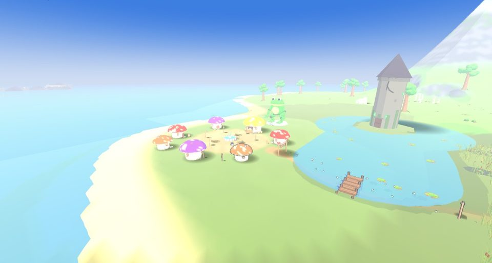
"O melhor jogo 3D de sapos chamados Ribbat com casas de palha na praia do mundo!"
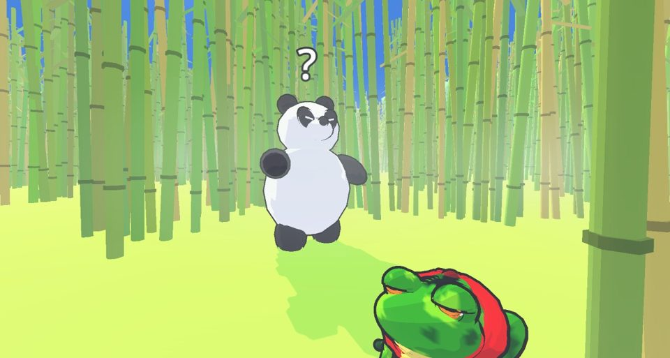
"Facinho de jogar!"
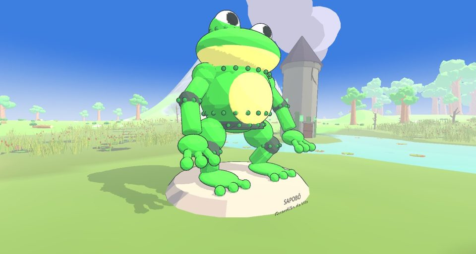
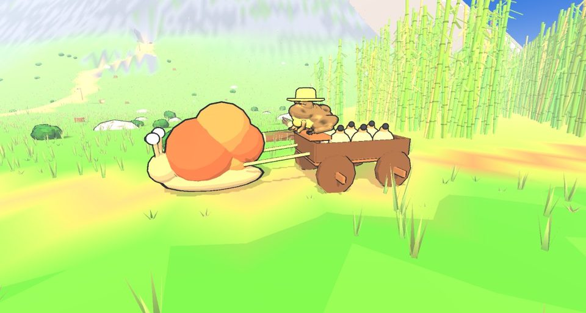
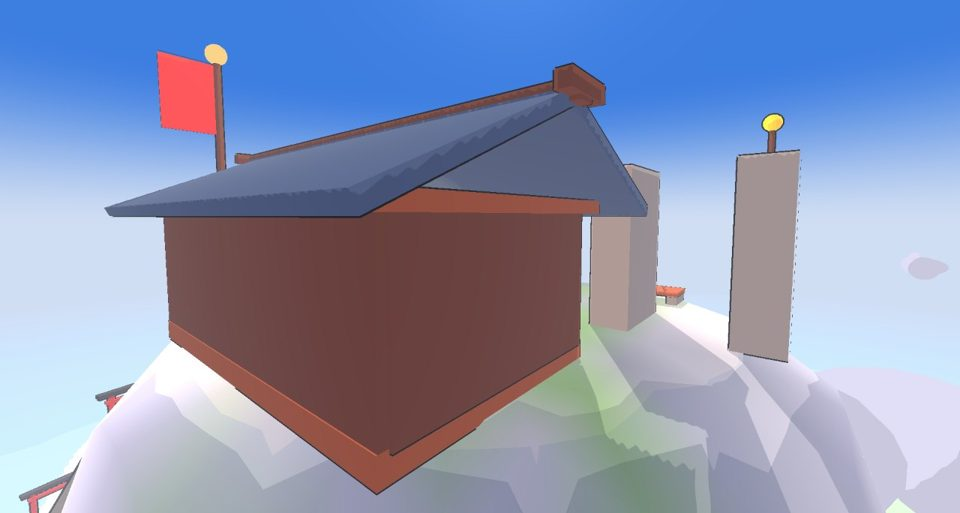
"Modo online!"chega na próxima atualização
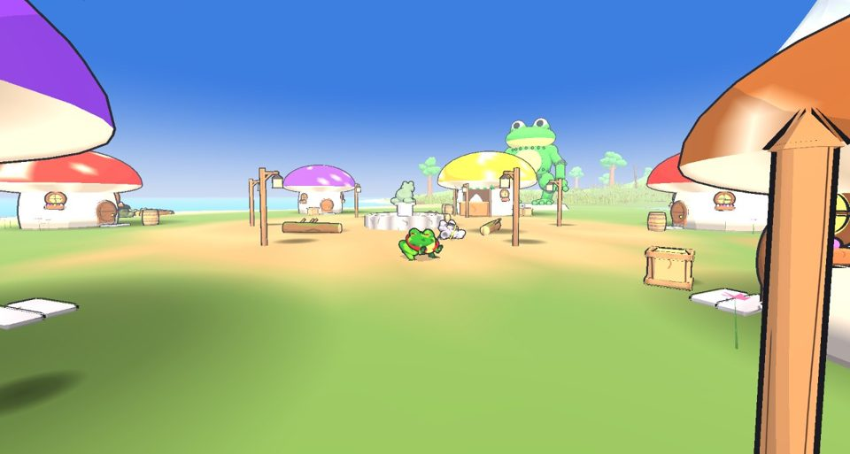
SUSPEITOS
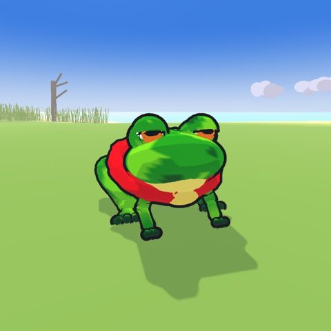
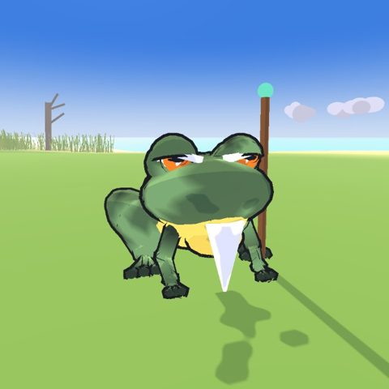
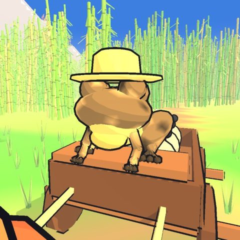
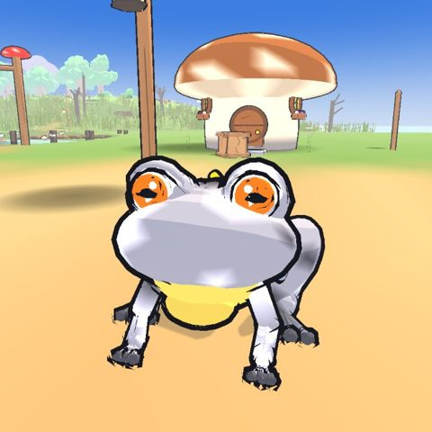
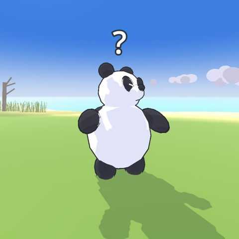
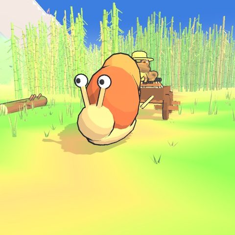
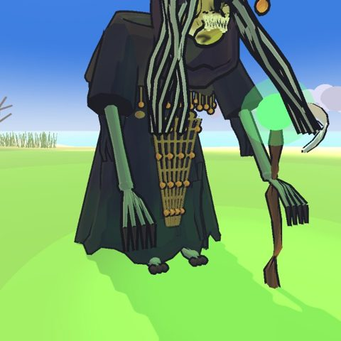
Pronto pra investigar?
⬇ BAIXAR O RIBBAT LAUNCHERWindows · abre, baixa o jogo sozinho e atualiza quando sair versão nova
Se o Windows avisar "protegeu o computador": Mais informações → Executar assim mesmo.
Prefere o zip? Ribbat2-v1.0.zip (69 MB, extrair tudo antes de abrir)
Se o Windows avisar "protegeu o computador": Mais informações → Executar assim mesmo.
Prefere o zip? Ribbat2-v1.0.zip (69 MB, extrair tudo antes de abrir)
Feito pelo Gomes · GitHub